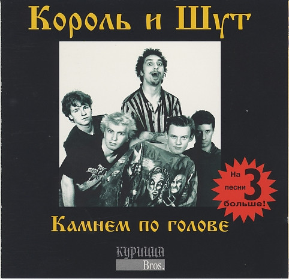
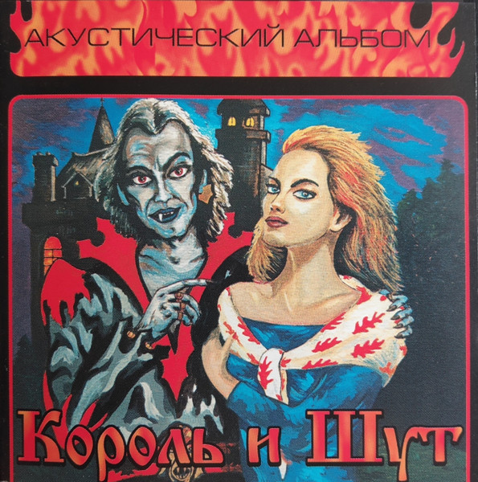
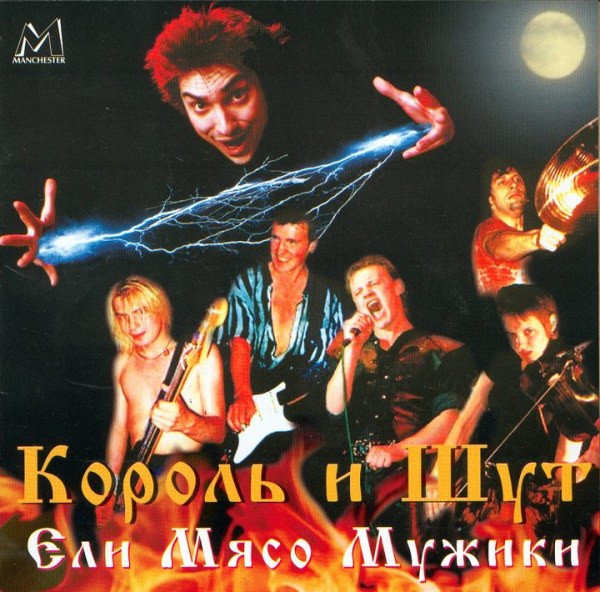
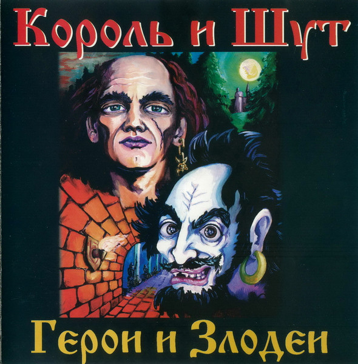
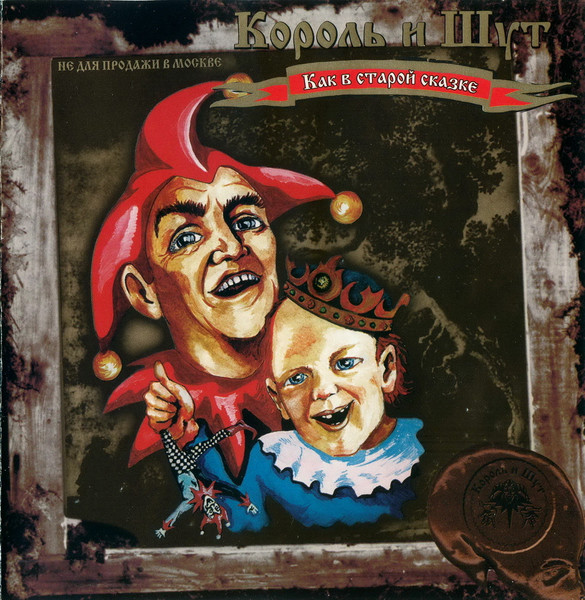

König und Narr auf Deutsch übersetzt. Korol i Shut war eine legendäre russische Rockband, gegründet 1988 in Leningrad. Sie erfanden den Russian Horror-Punk: düstere Märchen über Hexen, Trolle und Vampire, verpackt in harten Punk-Rock und Folk-Melodien. Die Frontmänner waren Mikhail Gorshok Gorshenyov für den Gesang und die Musik sowie Andrey Knyaz Knyazev für die Texte. Mit Alben wie Kamnem po golove 1996 und Akusticheskiy Albom 1999 feierten sie ihren landesweiten Durchbruch und füllten große Stadien. Nach dem tragischen Tod von Mikhail Gorshenyov im Juli 2013 löste sich die Band auf. Bis heute bleibt Korol i Shut ein absolutes Kulturphänomen, das Generationen von Rockfans prägt.




